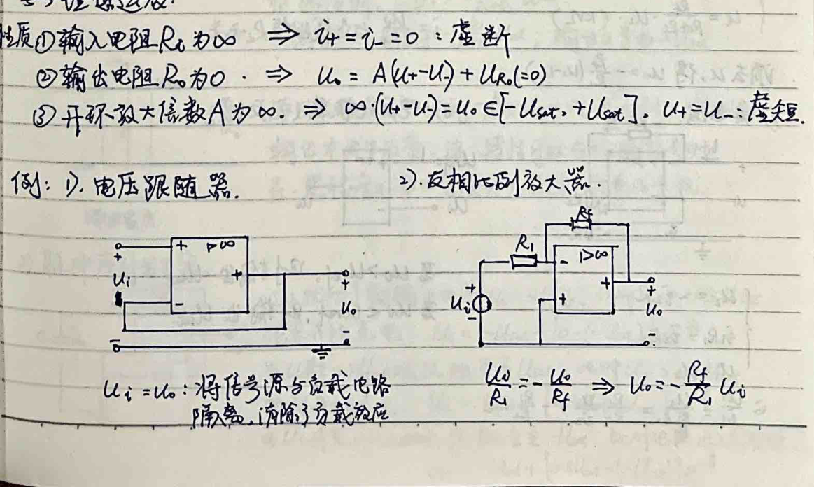
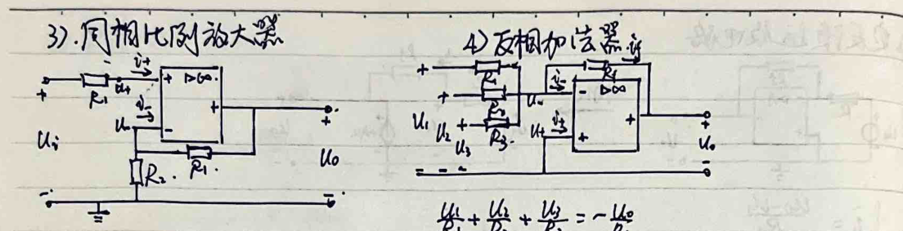
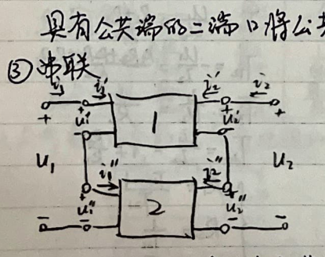

Chapter 01
Circuits Principles, Experiments, And Semiconductors
One

In the figure, we can see that $u_2 = \frac{R_2 R_3 1 i_1 - R_3 R_2 t_2}{R_{12} + R_2 + R_3 1}$, $u_3 = \frac{R_3 R_2 i_2 - R_3 1 t_3}{R_{12} + R_2 + R_3 1}$, and $u_3 = \frac{R_3 1 R_2 i_3 - R_2 t_3}{R_{12} + R_2 + R_3 1}$, which are all in the Y shape. Comparing these with the formulas in the figure, we can see that $R_1 = \frac{R_2 R_3 1}{R_{12} + R_2 + R_3 1}$, $R_2 = \frac{R_3 R_2}{R_{12} + R_2 + R_3 1}$, and $R_3 = \frac{R_2 R_3}{R_{12} + R_2 + R_3 1}$, which are all in the X shape. Therefore, the resistance between two points in a network can be calculated using the formula $R = \frac{U_1 U_2}{I_1 I_2}$, where $U_1$ and $U_2$ are the voltages across two points in the network, and $I_1$ and $I_2$ are the currents through two points in the network.
Let's read all the text and math in this image. We will translate the handwritten Chinese text to coherent English prose. Format math using LaTeX $$...$$






Three. Two-Port Networks
The two-port network consists of three networks: network 1, network 2, and network 3. The two-port network consists of three networks: network 1, network 2, and network 3. The two-port network consists of three networks: network 1, network 2, and network 3. The two-port network consists of three networks: network 1, network 2, and network 3. The two-port network consists of three networks: network 1, network 2, and network 3. The two-port network consists of three networks: network 1, network 2, and network 3. The two-port network consists of three networks: network 1, network 2, and network 3. The two-port network consists of three networks: network 1, network 2, and network 3. The two-port network consists of three networks: network 1, network 2, and network 3. The two-port network consists of three networks: network 1, network 2, and network 3. The two-port network consists of three networks: network 1, network 2, and network 3. The two-port network consists of three networks: network 1, network 2, and network 3. The two-port network consists of three networks: network 1, network 2, and network 3. The two-port network consists of three networks: network 1, network 2, and network 3. The two-port network consists of three networks: network 1, network 2, and network 3. The two-port network consists of three networks: network 1, network 2, and network 3. The two-port network consists of three networks: network 1, network 2, and network 3. The two-port network consists of three networks: network 1, network 2, and network 3. The two-port network consists of three networks: network 1, network 2, and network 3. The two-port network consists of three networks: network 1, network 2, and network 3. The two-port network consists of three networks: network 1, network 2, and network 3. The two-port network consists of three networks: network 1, network 2, and network 3. The two-port network consists of three networks: network 1, network 2, and network 3. The two-port network consists of three networks: network 1, network 2, and network 3. The two-port network consists of three networks: network 1, network 2, and network 3. The two-port network consists of three networks: network 1, network 2, and network 3. The two-port network consists of three networks: network 1, network 2, and network 3

① Series Connection
$$\begin{array}{ccccc} \text{①级联} & {} & {} & {} & {} \\ {} & {} & {} & {} & {} \\ \text{由 } [ \begin{array}{c} u_1 \\ u_2 \end{array} ] = T_1 [ \begin{array}{c} u_3 \\ u_4 \end{array} ] & {} & {} & {} & {} \\ {} & {} & {} & {} & {} \\ \text{由 } [ \begin{array}{c} u_1 \\ u_2 \end{array} ] = T_2 [ \begin{array}{c} u_3 \\ u_4 \end{array} ] & {} & {} & {} & {} \\ {} & {} & {} & {} & {} \end{array}$$

Four. Linear resistance circuit analysis.
1. Node voltage method:
In the circuit, select one node as a reference node and set its voltage to zero. Other nodes in the circuit are called node voltage u1, u2, ..., and their voltage is automatically satisfied KVL. Only need to write the (n-1) node voltage equations.
(1) If the circuit contains only current sources, voltage sources and resistors, then there is a general form:
Self-duct is positive, mutual-duct is negative, and actual voltage source is transformed into actual voltage source. This is a positive sequence.
(2) If the circuit contains only current sources, voltage sources and resistors, then transform the current source into a current source. Then write the control equation and node voltage relationship equations.
(3) If the circuit contains only current sources, voltage sources and resistors, then the current source is not considered. The current source is not considered in the node voltage relationship equations.
(4) If the circuit contains two nodes with a pure voltage source (or current source), then through the reference node selection in the circuit, add voltage source and current source to the circuit. Then write the node voltage relationship equations.
(5) If the circuit contains two nodes with a pure voltage source (or current source), then through the reference node selection in the circuit, add voltage source and current source to the circuit. Then write the node voltage relationship equations.
2. Circuit current method:
In the circuit, assume that there is a current source, and add a voltage source to each node. Then write the (b-n+1) current source relationship equations.
(1) If the circuit contains only current sources, voltage sources and resistors, then add a voltage source to each node. Then write the (b-n+1) current source relationship equations.
(2) If the circuit contains only current sources, voltage sources and resistors, then add a voltage source to each node. Then write the (b-n+1) current source relationship equations.
(3) If the circuit contains only current sources, voltage sources and resistors, then add a voltage source to each node. Then write the (b-n+1) current source relationship equations.
(4) If the circuit contains two nodes with a pure voltage source (or current source), then through the reference node selection in the circuit, add voltage source and current source to the circuit. Then write the node voltage relationship equations.
(5) If the circuit contains two nodes with a pure voltage source (or current source), then through the reference node selection in the circuit, add voltage source and current source to the circuit. Then write the node voltage relationship equations.
The handwritten text on the page translates to:
"Let's consider the voltage across a circuit. We'll represent this voltage using a voltage divider. Then, we'll add the voltage across each node to the voltage at that node. We'll then combine these expressions to get a single expression for the voltage across the circuit. The final result is:
8. The voltage divider theorem:
$$ \frac{V_{12}}{V_{11}} = \frac{V_{12}}{V_{11}} + \frac{V_{12}}{V_{11}} + \ldots + \frac{V_{12}}{V_{11}}$$
9. The voltage divider theorem:
$$ \frac{V_{23}}{V_{11}} = \frac{V_{23}}{V_{11}} + \frac{V_{23}}{V_{11}} + \ldots + \frac{V_{23}}{V_{11}}$$
The final result is:
$$ \frac{V_{23}}{V_{11}} = \frac{V_{23}}{V_{11}} + \frac{V_{23}}{V_{11}} + \ldots + \frac{V_{23}}{V_{11}}$$
The final result is:
$$ \frac{V_{23}}{V_{11}} = \frac{V_{23}}{V_{11}} + \frac{V_{23}}{V_{11}} + \ldots + \frac{V_{23}}{V_{11}}$$
The final result is:
$$ \frac{V_{23}}{V_{11}} = \frac{V_{23}}{V_{11}} + \frac{V_{23}}{V_{11}} + \ldots + \frac{V_{23}}{V_{11}}$$
The final result is:
$$ \frac{V_{23}}{V_{11}} = \frac{V_{23}}{V_{11}} + \frac{V_{23}}{V_{11}} + \ldots + \frac{V_{23}}{V_{11}}$$
The final result is:
$$ \frac{V_{23}}{V_{11}} = \frac{V_{23}}{V_{11}} + \frac{V_{23}}{V_{11}} + \ldots + \frac{V_{23}}{V_{11}}$$
The final result is:
$$ \frac{V_{23}}{V_{11}} = \frac{V_{23}}{
The handwritten text on the page is a mathematical document. The content appears to be a set of notes or notes on mathematics, specifically related to circuit theory and network analysis. The text is written in Chinese and includes mathematical equations and explanations. The document appears to be a study or lecture note, possibly from a course on electrical engineering or computer science. The handwriting is clear and legible, with the text organized in a logical manner.
The handwritten text on the page is a mathematical document. The content includes various mathematical expressions, formulas, and equations. The text is written in Chinese characters, and the handwriting is clear and legible. The document appears to be a textbook or a study guide, possibly related to mathematics or physics. The text is formatted in a notebook style with lines and spaces between the paragraphs, and there are some handwritten annotations and corrections. The document contains a mix of mathematical symbols, formulas, and text.
Five. Nonlinear resistance circuit analysis. Definition: $u = f ( i )$ or $i = g ( u )$ eg. Integral two-terminal: $i = L s ( e ^ { \frac { u } { 2 \mu _ { 0 } } } - 1 )$ Characteristics: ① $u - i$ relationship is non-linear and irreversible. ② $u - i$ relationship can be unfolded in the form of a Taylor expansion. If the high-order derivative is greater than 2, then the nearby small disturbance and its response are nonlinear. ③ Multiple solutions may be possible.
The handwritten Chinese text on the page translates to:
3. Gate.
4. Stability.
5. Nonlinear resistance producing new frequency components: requires knowledge and mathematical calculations.
6. MOSFET used to construct amplifiers and logic circuits.
7. MOSFET model:
8. MOSFET model:
9. MOSFET model:
10. MOSFET model:
11. MOSFET model:
12. MOSFET model:
13. MOSFET model:
14. MOSFET model:
15. MOSFET model:
16. MOSFET model:
17. MOSFET model:
18. MOSFET model:
19. MOSFET model:
20. MOSFET model:
21. MOSFET model:
22. MOSFET model:
23. MOSFET model:
24. MOSFET model:
25. MOSFET model:
26. MOSFET model:
27. MOSFET model:
28. MOSFET model:
29. MOSFET model:
30. MOSFET model:
31. MOSFET model:
32. MOSFET model:
33. MOSFET model:
34. MOSFET model:
35. MOSFET model:
36. MOSFET model:
37. MOSFET model:
38. MOSFET model:
39. MOSFET model:
40. MOSFET model:
41. MOSFET model:
42. MOSFET model:
43. MOSFET model:
44. MOSFET model:
45. MOSFET model:
46. MOSFET model:
47. MOSFET model:
48. MOSFET model:
49. MOSFET model:
50. MOSFET model:
51. MOSFET model:
52. MOSFET model:
53. MOSFET model:
54. MOSFET model:
55. MOSFET model:
56. MOSFET model:
57. MOSFET model:
58. MOSFET model:
59. MOSFET model:
60. MOSFET model:
61. MOSFET model:
62. MOSFET model:
63. MOSFET model:
64. MOSFET model:
65. MOSFET model:
66. MOSFET model:
67. MOSFET model:
68. MOSFET model:
69. MOSFET model:
70. MOSFET model:
71. MOSFET model:
72. MOSFET model:
73. MOSFET model:
74. MOSFET model:
75. MOSFET model:
76.

Six. Time-domain analysis of dynamic circuits. 1. Dynamic elements (storage elements) (linear, time-invariant)
| Element | Equation |
| --- | --- |
| Capacitor | \( q = C u \) , \( i = \frac { d q } { d t } \) |
| Inductor | \( u = L i \) , \( u = \frac { d u } { d t } \) |
| Capacitor | \( u = \frac { 1 } { s } \int _ { 0 } ^ { t } i d t + \frac { 1 } { s } \int _ { 0 } ^ { t } i d t \) |
| Inductor | \( u = \pm \int _ { 0 } ^ { t } i d t + \pm \int _ { 0 } ^ { t } u d t \) |
| Inductor | \( u = \frac { 1 } { s } \int _ { 0 } ^ { t } i d t + \frac { 1 } { s } \int _ { 0 } ^ { t } u d t \) |
| Inductor | \( u = \pm \int _ { 0 } ^ { t } i d t + \pm \int _ { 0 } ^ { t } u d t \) |
2. Dynamic elements (storage elements) (nonlinear, time-invariant)
| Element | Equation |
| --- | --- |
| Capacitor | \( u = \frac { 1 } { s } \int _ { 0 } ^ { t } i d t + \frac { 1 } { s } \int _ { 0 } ^ { t } u d t \) |
| Inductor | \( u = \pm \int _ { 0 } ^ { t } i d t + \pm \int _ { 0 } ^ { t } u d t \) |
| Inductor | \( u = \frac { 1 } { s } \int _ { 0 } ^ { t } i d t + \frac { 1 } { s } \int _ { 0 } ^ { t } u d t \) |
| Inductor | \( u = \pm \int _ { 0 } ^ { t } i d t + \pm \int _ { 0 } ^ { t } u d t \) |
3. Dynamic elements (storage elements) (linear, time-invariant)
| Element | Equation |
| --- | --- |
| Capacitor | \( u = \frac { 1 } { s } \int _ { 0 } ^ { t } i d t + \frac { 1 } { s } \int _ { 0 } ^ { t } u d t \) |
|
2. Classical Methods for Solving Dynamic Circuits
1. Free Response: The response of a single-degree-of-freedom system to a step input.
2. Forced Response: The response of a single-degree-of-freedom system to a sinusoidal input.
3. Free Response: The response of a single-degree-of-freedom system to a step input.
4. Forced Response: The response of a single-degree-of-freedom system to a sinusoidal input.
5. Free Response: The response of a single-degree-of-freedom system to a step input.
6. Forced Response: The response of a single-degree-of-freedom system to a sinusoidal input.
7. Free Response: The response of a single-degree-of-freedom system to a step input.
8. Forced Response: The response of a single-degree-of-freedom system to a sinusoidal input.
9. Free Response: The response of a single-degree-of-freedom system to a step input.
10. Forced Response: The response of a single-degree-of-freedom system to a sinusoidal input.
11. Free Response: The response of a single-degree-of-freedom system to a step input.
12. Forced Response: The response of a single-degree-of-freedom system to a sinusoidal input.
13. Free Response: The response of a single-degree-of-freedom system to a step input.
14. Forced Response: The response of a single-degree-of-freedom system to a sinusoidal input.
15. Free Response: The response of a single-degree-of-freedom system to a step input.
16. Forced Response: The response of a single-degree-of-freedom system to a sinusoidal input.
17. Free Response: The response of a single-degree-of-freedom system to a step input.
18. Forced Response: The response of a single-degree-of-freedom system to a sinusoidal input.
19. Free Response: The response of a single-degree-of-freedom system to a step input.
20. Forced Response: The response of a single-degree-of-freedom system to a sinusoidal input.
21. Free Response: The response of a single-degree-of-freedom system to a step input.
22. Forced Response: The response of a single-degree-of-freedom system to a sinusoidal input.
23. Free Response: The response of a single-degree-of-freedom system to a step input.
24. Forced Response: The response of a single-degree-of-freedom system to a sinusoidal input.
25. Free Response: The response of a single-degree-of-freedom system to a step input.
26. Forced Response: The response of a single-degree-of-freedom system to a sinusoidal input.
27. Free Response: The response of a single-degree-of
3. **Additive Law for Solving Dynamic Circuits.**
Zero input response: With initial conditions, it is linear (all initial conditions, i.e., u0, u1, ...).
Zero state response: With input, it is linear (all inputs, i.e., u0, u1, ...).
Zero input response can be decomposed into zero input and zero state response. Zero input can be obtained through three methods (first), characteristic method (second) etc. Zero state response can be obtained by decomposing any simple input into some linear combinations, and then summing them up.
$$ \sum_{i=0}^{n-1} f(t_i) = \sum_{i=0}^{n-1} f(t_i) \cdot \sum_{i=0}^{n-1} f(t_i) = \sum_{i=0}^{n-1} f(t_i) \cdot \sum_{i=0}^{n-1} f(t_i) = \sum_{i=0}^{n-1} f(t_i) \cdot \sum_{i=0}^{n-1} f(t_i) = \sum_{i=0}^{n-1} f(t_i) \cdot \sum_{i=0}^{n-1} f(t_i) = \sum_{i=0}^{n-1} f(t_i) \cdot \sum_{i=0}^{n-1} f(t_i) = \sum_{i=0}^{n-1} f(t_i) \cdot \sum_{i=0}^{n-1} f(t_i) = \sum_{i=0}^{n-1} f(t_i) \cdot \sum_{i=0}^{n-1} f(t_i) = \sum_{i=0}^{n-1} f(t_i) \cdot \sum_{i=0}^{n-1} f(t_i) = \sum_{i=0}^{n-1} f(t_i) \cdot \sum_{i=0}^{n-1} f(t_i) = \sum_{i=0}^{n-1} f(t_i) \cdot \sum_{i=0}^{n-1} f(t_i) = \sum_{i=0}^{n-1} f(t_i) \cdot \sum_{i=0}^{n-1} f(t_i) = \sum_{i=0}^{n-1} f(t_i) \cdot \sum_{i=0}^{n-1} f(t_i) = \sum_{i=0}^{n-1} f(t_i) \cdot \sum_{i=0}^{n-1} f(t_i) = \sum_{i
The handwritten Chinese text translates to:
As \( N \rightarrow \infty \), \( \Delta t \rightarrow \delta \Delta t \), and \( k \Delta t \rightarrow 2 \), the unit impulse response becomes a unit impulse response \( h(t) \rightarrow h(2t) \). The corresponding unit impulse response's zero-state response becomes a unit impulse response \( h_0(t) \rightarrow h_0(2t) \). The unit impulse response's zero-state response \( h_0(t) \) is given by:
$$ h_0(t) = \int_{-\infty}^{+\infty} f(t) h(t - t_0) d t $$
Below, we explain the unit impulse response \( h(2t) \) in detail:
1. **Definition**: The unit impulse response's zero-state response is defined as:
$$ \int_{-\infty}^{+\infty} f(t) d t = 1 $$
where \( f(t) \) is the input function and \( d t \) is the time derivative.
The unit impulse response's zero-state response is also given by:
$$ \int_{-\infty}^{+\infty} f(t) d t = 1 $$
where \( f(t) \) is the input function and \( d t \) is the time derivative.
2. **Derivation**: The unit impulse response's zero-state response \( h_0(t) \) is given by:
$$ h_0(t) = \int_{-\infty}^{+\infty} f(t) h(t - t_0) d t $$
3. **Properties**:
(1) The integral of the unit impulse response's zero-state response is 1.
(2) The derivative of the unit impulse response's zero-state response is also 1.
(3) The convolution of two unit impulse responses is also 1.
4. **Implications**:
- The convolution of two unit impulse responses is also 1.
- The convolution of a unit impulse response with itself is also 1.
5. **Conclusion**:
The unit impulse response's zero-state response and its convolution with itself are both 1. This property is useful in various applications, such as signal processing and control systems.

Seven. Analysis of steady state response under sinusoidal excitation. 1. Analysis basis (sinusoidal elements, power) and examples. Theoretically, the solution of non-integer order differential equations can solve the response problem under sinusoidal excitation. However, through the method of superposition, it can be transformed into a integer order differential equation to solve the response. At the same time, the calculation of power can also be simplified. In the use of Bessel series, any non-periodic sinusoidal excitation response and power can be solved. The sinusoidal excitation: \( i = 2 m \sin ( \omega t + \varphi _ { i } ) \) Effective value \( L = \sqrt { \frac { 1 } { 2 } } \int _ { 0 } ^ { T } i ^ { 2 } d t = \frac { 2 } { \sqrt { 2 } } m \). Its derivative, integral, and frequency are all the same as the frequency of sinusoidal excitation. Therefore, linear circuit voltage, current, and resistance are all the same as the frequency of sinusoidal excitation (which are through above mentioned operations). So, for analysis of sinusoidal steady state response, for sinusoidal elements, you can first not consider frequency, only consider amplitude and initial value. \(\therefore\) \( i \) 's expression: \( i \) has two expressions: \( i = 2 m \angle \varphi _ { i } \) and \( i = 2 m \angle \varphi _ { i } + j 2 m \angle \varphi _ { i } \). Among them, \( i > 0 , \varphi _ { i } \in [- \pi , \pi ] \), as shown in figure 1, therefore, only represents a sinusoidal, which is the only representation of sinusoidal.
Maximum power transmission: The load resistance can be obtained from a fixed power source to obtain the maximum effective power.
The handwritten text on the page translates to:
"5) Transformers (H = μB)
eg.1 Core Transformer
$$\left\{ \begin{array} { l } { \textcolor{red}{ U _ { 1 } = ( R _ { 1 } + j \omega L ) \dot { i } _ { 1 } + j \omega M i _ { 2 } } } \\ { \textcolor{red}{ U _ { 2 } = j \omega M i _ { 1 } + ( R _ { 2 } + j \omega L _ { 2 } ) i _ { 2 } } } \\ { \textcolor{red}{ U _ { 3 } = L \frac { d i _ { 2 } } { d t } - M \frac { d i _ { 1 } } { d t } = ( L + M ) \frac { d i _ { 2 } } { d t } - M \frac { d i _ { 1 } } { d t } } } \end{array} \right.$$
Through adding one common mode line to the circuit, you can obtain a T-shaped equivalent circuit.
2. Analysis of the extended non-integer periodic steady state.
(1) To decompose the periodic non-integer signal into a sum of terms:
$$ f(t) = a_0 + \sum_{k \in \mathbb{Z}} [a_k \cos(k_1 t) + b_k \sin(k_1 t)] $$
$$ = a_0 + \sum_{k \in \mathbb{Z}} C_k \sin(k_1 t + \varphi_k) $$
$$ = a_0 + C_1 \sin(k_1 t + \varphi_1) + \sum_{k \in \mathbb{Z}} C_k \sin(k_1 t + \varphi_k) $$
$$ = a_0 + C_1 \sin(k_1 t + \varphi_1) + \sum_{k \in \mathbb{Z}} C_k \sin(k_1 t + \varphi_k) $$
$$ = a_0 + C_1 \sin(k_1 t + \varphi_1) + \sum_{k \in \mathbb{Z}} C_k \sin(k_1 t + \varphi_k) $$
$$ = a_0 + C_1 \sin(k_1 t + \varphi_1) + \sum_{k \in \mathbb{Z}} C_k \sin(k_1 t + \varphi_k) $$
$$ = a_0 + C_1 \sin(k_1 t + \varphi_1) + \sum_{k \in \mathbb{Z}} C_k \sin(k_1 t + \varphi_k) $$
$$ = a_0 + C_1 \sin(k_1 t + \varphi_1) + \sum_{k \in \mathbb{Z}} C_k \sin(k_1 t + \varphi_k) $$
$$ = a_0 + C_1 \sin(k_1 t + \varphi_1) + \sum_{k \in \mathbb{Z}} C_k \sin(k_1 t + \varphi_k) $$
$$ = a_0 + C_1 \sin(k_1 t + \varphi_1) + \sum_{k \in \mathbb{Z}} C_k \sin(k_1 t + \varphi_k) $$
$$ = a_0 + C_1 \sin(k_1 t + \varphi_1) + \sum_{k \in \mathbb{Z}} C_k \sin(k_1 t + \varphi_k) $$
$$ = a_0 + C_1 \sin(k_1 t + \varphi_1) + \sum_{k \in \mathbb{

The handwritten text on the page translates to:
2) RLC circuit components and their functions in a filter circuit.
For a Δ connected resistance. It can be converted into a Y connection, when the source is also in a Y connection, we can use the single-phase method to analyze. 2. Unbalanced three-phase circuit. In actual power system, the source is not balanced, and the load is also not balanced. When the neutral exists, U21 = U23 = 1.233. When the neutral does not exist, the neutral point voltage U2N = (U1 + U2 + U3) / 3. : In actual power system, the neutral is guaranteed that each phase load works in a certain voltage range. 3. Three-phase circuit power. Single-phase power: U21 * cosφ = Pp U2p, U2q is phase voltage, phase current. { For Y connection: U2 = 1/3 * U2p, U2 = 1/2 * U2q. For Δ connection: U2 = U2p, U2 = 1/2 * U2q. : Three-phase total power P = 3U2p cosφ = √3 U2p, U2p, U2q are phase voltage, phase current. : Three-phase instantaneous power P = U2p * 2p [cosφ - cos(ωt + φ)] = U2p * 2p [cosφ - cos(ωt + φ)] = U2p * 2p [cosφ - cos(ωt + φ)] = U2p * 2p [cosφ - cos(ωt + φ)] = U2p * 2p [cosφ - cos(ωt + φ)] = U2p * 2p [cosφ - cos(ωt + φ)] = U2p * 2p [cosφ - cos(ωt + φ)] = U2p * 2p [cosφ - cos(ωt + φ)] = U2p * 2p [cosφ - cos(ωt + φ)] = U2p * 2p [cosφ - cos(ωt + φ)] = U2p * 2p [cosφ - cos(ωt + φ)] = U2p * 2p [cosφ - cos(ωt + φ)] = U2p * 2p [cosφ - cos(ωt + φ)] = U2p * 2p [cosφ - cos(ωt + φ)] = U2p * 2p [cosφ - cos(ωt + φ)] = U2p * 2p [cosφ - cos(ωt + φ)] = U2p * 2p [cosφ - cos(ωt + φ)] = U2p * 2p [cosφ - cos(ω
The handwritten text on the page translates to:
Three-phase three-wire system:
- Three-phase three-wire system:
- Three-phase three-wire system:
- Three-phase three-wire system:
- Three-phase three-wire system:
- Three-phase three-wire system:
- Three-phase three-wire system:
- Three-phase three-wire system:
- Three-phase three-wire system:
- Three-phase three-wire system:
- Three-phase three-wire system:
- Three-phase three-wire system:
- Three-phase three-wire system:
- Three-phase three-wire system:
- Three-phase three-wire system:
- Three-phase three-wire system:
- Three-phase three-wire system:
- Three-phase three-wire system:
- Three-phase three-wire system:
- Three-phase three-wire system:
- Three-phase three-wire system:
- Three-phase three-wire system:
- Three-phase three-wire system:
- Three-phase three-wire system:
- Three-phase three-wire system:
- Three-phase three-wire system:
- Three-phase three-wire system:
- Three-phase three-wire system:
- Three-phase three-wire system:
- Three-phase three-wire system:
- Three-phase three-wire system:
- Three-phase three-wire system:
- Three-phase three-wire system:
- Three-phase three-wire system:
- Three-phase three-wire system:
- Three-phase three-wire system:
- Three-phase three-wire system:
- Three-phase three-wire system:
- Three-phase three-wire system:
- Three-phase three-wire system:
- Three-phase three-wire system:
- Three-phase three-wire system:
- Three-phase three-wire system:
- Three-phase three-wire system:
- Three-phase three-wire system:
- Three-phase three-wire system:
- Three-phase three-wire system:
- Three-phase three-wire system:
- Three-phase three-wire system:
- Three-phase three-wire system:
- Three-phase three-wire system:
- Three-phase three-wire system:
- Three-phase three-wire system:
- Three-phase three-wire system:
- Three-phase three-wire system:
- Three-phase three-wire system:
- Three-phase three-wire system:
- Three-phase three-wire system:
- Three-phase three-wire system:
- Three-phase three-wire system:
- Three-phase three-wire system:
- Three-phase three-wire system:
- Three-phase three-wire system:
- Three-phase three-wire system:
- Three-phase three-wire system:
- Three-phase three-wire system:
The handwritten text on the page translates to:
PN junction characteristics:
1. Positive characteristic: Positive contact +, Negative contact -.
- For positive contact +, negative contact -.
- Due to the series resistance and the series resistance in the middle, the voltage drop is very small.
- Therefore, the voltage drop across the space charge region is very small.
- The voltage drop across the space charge region is very small.
- The voltage drop across the space charge region is very small.
- The voltage drop across the space charge region is very small.
- The voltage drop across the space charge region is very small.
- The voltage drop across the space charge region is very small.
- The voltage drop across the space charge region is very small.
- The voltage drop across the space charge region is very small.
- The voltage drop across the space charge region is very small.
- The voltage drop across the space charge region is very small.
- The voltage drop across the space charge region is very small.
- The voltage drop across the space charge region is very small.
- The voltage drop across the space charge region is very small.
- The voltage drop across the space charge region is very small.
- The voltage drop across the space charge region is very small.
- The voltage drop across the space charge region is very small.
- The voltage drop across the space charge region is very small.
- The voltage drop across the space charge region is very small.
- The voltage drop across the space charge region is very small.
- The voltage drop across the space charge region is very small.
- The voltage drop across the space charge region is very small.
- The voltage drop across the space charge region is very small.
- The voltage drop across the space charge region is very small.
- The voltage drop across the space charge region is very small.
- The voltage drop across the space charge region is very small.
- The voltage drop across the space charge region is very small.
- The voltage drop across the space charge region is very small.
- The voltage drop across the space charge region is very small.
- The voltage drop across the space charge region is very small.
- The voltage drop across the space charge region is very small.
- The voltage drop across the space charge region is very small.
- The voltage drop across the space charge region is very small.
- The voltage drop across the space charge region is very small.
- The voltage drop across the space charge region is very small.
- The voltage drop across the space charge region is very small.
- The voltage drop across the space charge region is very small.
- The voltage drop across the space charge region is very small.
- The voltage drop across the space charge region is very small.
- The voltage drop across the
The handwritten text on the page translates to:
"Co mainly depends on the PN junctions. The forward voltage drop is determined by the PN junctions, and the reverse voltage drop is determined by the PN junctions. The forward voltage drop is generally greater than the reverse voltage drop, and the forward voltage drop is greater than the reverse voltage drop. The forward voltage drop is generally greater than the reverse voltage drop, and the forward voltage drop is greater than the reverse voltage drop. The forward voltage drop is generally greater than the reverse voltage drop, and the forward voltage drop is greater than the reverse voltage drop. The forward voltage drop is generally greater than the reverse voltage drop, and the forward voltage drop is greater than the reverse voltage drop. The forward voltage drop is generally greater than the reverse voltage drop, and the forward voltage drop is greater than the reverse voltage drop. The forward voltage drop is generally greater than the reverse voltage drop, and the forward voltage drop is greater than the reverse voltage drop. The forward voltage drop is generally greater than the reverse voltage drop, and the forward voltage drop is greater than the reverse voltage drop. The forward voltage drop is generally greater than the reverse voltage drop, and the forward voltage drop is greater than the reverse voltage drop. The forward voltage drop is generally greater than the reverse voltage drop, and the forward voltage drop is greater than the reverse voltage drop. The forward voltage drop is generally greater than the reverse voltage drop, and the forward voltage drop is greater than the reverse voltage drop. The forward voltage drop is generally greater than the reverse voltage drop, and the forward voltage drop is greater than the reverse voltage drop. The forward voltage drop is generally greater than the reverse voltage drop, and the forward voltage drop is greater than the reverse voltage drop. The forward voltage drop is generally greater than the reverse voltage drop, and the forward voltage drop is greater than the reverse voltage drop. The forward voltage drop is generally greater than the reverse voltage drop, and the forward voltage drop is greater than the reverse voltage drop. The forward voltage drop is generally greater than the reverse voltage drop, and the forward voltage drop is greater than the reverse voltage drop. The forward voltage drop is generally greater than the reverse voltage drop, and the forward voltage drop is greater than the reverse voltage drop. The forward voltage drop is generally greater than the reverse voltage drop, and the forward voltage drop is greater than the reverse voltage drop. The forward voltage drop is generally greater than the reverse voltage drop, and the forward voltage drop is greater than the reverse voltage drop. The forward voltage drop is generally greater than the reverse voltage drop, and the forward voltage drop is greater than the reverse voltage drop. The forward voltage drop is generally greater than the reverse voltage drop, and the forward voltage drop is greater than the reverse voltage drop. The forward voltage drop is generally greater than the reverse voltage drop, and the forward voltage drop is greater than the reverse voltage drop. The forward voltage drop is generally greater than the reverse
3). The electron drift current ICn. And the collector region's minority carriers and base region's minority carriers in the Jc field direction are drifted, forming the reverse drift current (reverse saturation current). ICBO. 2B = 2Bp + 2Ep - 2cBO 2c = 2cn + 2cBO 2e = 2c + 2B 3). The current distribution relationship of the collector's internal current is determined by the transmission process and the collector's current. The collector's internal current is determined by the collector's current and the collector's current. The collector's internal current is determined by the collector's current and the collector's current. 1) CB 2) CE 3) CC

The handwritten text on the page translates to:
"Base open state, collector-emitter and collector-base reverse bias voltage. V(CE)CEO"
"Collector-emitter maximum allowable power dissipation Pcm. Pcm ≈ VCE IC, in saturation state, VCE is reduced to collector voltage, and Pcm is mainly consumed in the collector."
"Collector CE when, to ensure Lc < Lcm, VCE < V(CE)CEO, Pcm < Pcm."
"③ Applications of semiconductor devices. Work in the saturation region has a positive feedback effect, and is controlled by a feedback current source. Work in the saturation and cut-off regions have switching characteristics, and are controlled by switching switches."
"1) Applications of semiconductor devices in amplification circuits. There must be a large enough VBB, so that VBB + VCE > Vth, and V0 = VCE - RccIC > Vth. Therefore, the semiconductor device works in the saturation region.
The handwritten text on the page translates to:
"1. The current used in the circuit is 28Q, 2CQ, VCCQ, and VCEQ. The total input voltage is Vi = VBB + VSB. The feedback voltage is VBEQ + Vbe. The collector current is ICQ + ICm sin(ωt). The base current is IBQ + IBm sin(ωt). The collector voltage is VCC - RCB * IC. The base voltage is VBEQ + Vbe + VCEQ. The collector current is ICQ + ICm sin(ωt). The feedback voltage is VBEQ + Vbe + VCEQ. The collector current is ICQ + ICm sin(ωt). The feedback voltage is VBEQ + Vbe + VCEQ. The collector current is ICQ + ICm sin(ωt). The feedback voltage is VBEQ + Vbe + VCEQ. The collector current is ICQ + ICm sin(ωt). The feedback voltage is VBEQ + Vbe + VCEQ. The collector current is ICQ + ICm sin(ωt). The feedback voltage is VBEQ + Vbe + VCEQ. The collector current is ICQ + ICm sin(ωt). The feedback voltage is VBEQ + Vbe + VCEQ. The collector current is ICQ + ICm sin(ωt). The feedback voltage is VBEQ + Vbe + VCEQ. The collector current is ICQ + ICm sin(ωt). The feedback voltage is VBEQ + Vbe + VCEQ. The collector current is ICQ + ICm sin(ωt). The feedback voltage is VBEQ + Vbe + VCEQ. The collector current is ICQ + ICm sin(ωt). The feedback voltage is VBEQ + Vbe + VCEQ. The collector current is ICQ + ICm sin(ωt). The feedback voltage is VBEQ + Vbe + VCEQ. The collector current is ICQ + ICm sin(ωt). The feedback voltage is VBEQ + Vbe + VCEQ. The collector current is ICQ + ICm sin(ωt). The feedback voltage is VBEQ + Vbe + VCEQ. The collector current is ICQ + ICm sin(ωt). The feedback voltage is VBEQ + Vbe + VCEQ. The collector current is ICQ + ICm sin(ωt). The feedback voltage is VBEQ + Vbe + VCEQ. The collector current is ICQ + ICm sin(ωt). The feedback voltage is VBEQ + Vbe + VCEQ. The collector current is ICQ + ICm sin(ωt). The feedback voltage is V
Bipolar Junction Transistor Quantitative Solution
The Definitions...
$$N _ { B } = N _ { A E } , \, N _ { B } = N _ { A B } , \, N _ { C } = N _ { P C }$$
$$D _ { B } = D _ { P } , \, D _ { B } = D _ { N } , \, D _ { C } = D _ { P }$$
$$L E _ { B } = L _ { P } , \, L _ { B } = 2 N _ { L } , \, L _ { C } = L _ { P } , \, T _ { E } = T _ { P } , \, T _ { B } = T _ { P } , \, T _ { C } = T _ { P }$$
$$P _ { B 0 } = P _ { N O } \, \sqrt { N _ { B } } , \, P _ { C 0 } = P _ { N O } ^ { 2 } / N _ { C }$$
Emitter Region:
$$O = D _ { E } \, c e ^ { 2 \Delta P _ { E } } \, \frac { \Delta P _ { E } } { \Delta x _ { 1 } ^ { 2 } } - \frac { \Delta P _ { E } } { \Delta x _ { 1 } ^ { 2 } } \, \frac { \Delta P _ { E } } { \Delta x _ { 2 } ^ { 2 } } \, \frac { \Delta P _ { E } } { \Delta x _ { 3 } ^ { 2 } } = P _ { E } \, \left( e ^ { \frac { \Delta P _ { E } } { T _ { E } } } - 1 \right)$$
Base Region:
$$O = D _ { B } \, c e ^ { 2 \Delta P _ { B } } \, \frac { \Delta P _ { B } } { \Delta x _ { 1 } ^ { 2 } } - \frac { \Delta P _ { B } } { \Delta x _ { 1 } ^ { 2 } } \, \frac { \Delta P _ { B } } { \Delta x _ { 2 } ^ { 2 } } \, \frac { \Delta P _ { B } } { \Delta x _ { 3 } ^ { 2 } } = P _ { B } \, \left( e ^ { \frac { \Delta P _ { B } } { T _ { B } } } - 1 \right)$$
The problem solution in the emitter and collector quasi-neutral region:
$$ \frac { d P _ { e } ( x _ { i } ) } { d x _ { i } } = P _ { e 0 } ( e ^ { \frac { V _ { B E } } { T _ { 0 } } } - 1 ) e ^ { - \frac { 2 \pi } { L _ { E } } } ( : I _ { e p } = - g S D E \frac { d A P _ { e } } { d x _ { i } } : )$$
$$ = g S \frac { D E } { L _ { E } } P _ { e 0 } ( e ^ { \frac { V _ { B E } } { T _ { 0 } } } - 1 )$$
$$ \frac { d P _ { e } ( x _ { 3 } ) } { d x _ { 3 } } = P _ { e 0 } ( e ^ { \frac { V _ { B E } } { T _ { 0 } } } - 1 ) e ^ { - \frac { 2 \pi } { L _ { E } } } ( : I _ { e p } = - g S D E \frac { d A P _ { c } } { d x _ { 3 } } : )$$
$$ = g S \frac { D c } { L _ { c } } P _ { e 0 } ( e ^ { \frac { V _ { B E } } { T _ { 0 } } } - 1 )$$
$$ \frac { d P _ { c } ( x _ { 3 } ) } { d x _ { 3 } } = P _ { c 0 } ( e ^ { \frac { V _ { B E } } { T _ { 0 } } } - 1 ) e ^ { - \frac { 2 \pi } { L _ { c } } } ( : I _ { e p } = - g S \frac { D c } { L _ { c } } P _ { e 0 } ( e ^ { \frac { V _ { B E } } { T _ { 0 } } } - 1 ) :$$
The problem solution in the base quasi-neutral region:
$$ \frac { d N _ { B C O } } { d x _ { 0 } } = A _ { 1 } e ^ { - \frac { x _ { 0 } } { L _ { B } } } + A _ { 2 } e ^ { \frac { x _ { 0 } } { L _ { B } } }$$
$$ \frac { d N _
Field Effect Transistor.
In saturation region (constant current region), $i_{d} \sim \frac{1}{2}\frac{W}{L}[2(V_{as}-V_{as}(x))V_{bs}-V_{bs}^{2}]$ $\sim \frac{1}{2}\frac{W}{L}[2(V_{as}-V_{as}(x))\left(V_{bs}-V_{as}(x)\right)^{2}-\left(V_{as}-V_{as}(x)\right)^{2}]$ $\sim \frac{1}{2}\frac{W}{L}\left(V_{as}-V_{as}(x)\right)^{2}$ (prepeak point) To improve accuracy, consider the effect of channel length modulation: $V_{as}(x)$, prepeak point -> S, L V, channel resistance, and prepeak point with source node voltage held constant at $V_{as}(x)$, so that $i_{d}-V_{bs}$ curve in saturation region shows a slope. Extend $V_{as}$ corresponding to all channels, with voltage at 30-50V. Early voltage L is shorter, $V_{as}$ is smaller. Consider the effect of channel length modulation: $i_{d} \sim \frac{1}{2}\frac{W}{L}\left(V_{as}-V_{as}(x)\right)^{2}(1+\frac{V_{as}}{L})$ $\sim \frac{1}{2}\frac{W}{L}\left(V_{as}-V_{as}(x)\right)^{2}(1+\frac{V_{as}}{L})$ $\sim \frac{W}{2L}\left(V_{as}-V_{as}(x)\right)^{2}(1+\frac{V_{as}}{L})$ $\sim \frac{W}{2L}\left(V_{as}-V_{as}(x)\right)^{2}(1+\frac{V_{as}}{L})$ $\sim \frac{W}{2L}\left(V_{as}-V_{as}(x)\right)^{2}(1+\frac{V_{as}}{L})$ $\sim \frac{W}{2L}\left(V_{as}-V_{as}(x)\right)^{2}(1+\frac{V_{as}}{L})$ $\sim \frac{W}{2L}\left(V_{as}-V_{as}(x)\right)^{2}(1+\frac{V_{as}}{L})$ $\sim \frac{W}{2L}\left(V_{as}-V_{as}(x)\right)^{2}(1+\frac{V_{as}}{L})$ $\sim \frac{W}{2L}\left(V_{as}-V_{as}(
The handwritten text on the page translates to:
---
**Explanation of MOSFET's Junction Model:**
- **Linear Capacitor (Flat Capacitor):**
- $C_{B0}$, $C_{B1}$, $C_{B2}$ (C: Channel)
- **Non-linear Capacitor (Dependent on Bias):**
- $C_{B0}$, $C_{B1}$, $C_{B2}$ (PN-Barrier)
- $C_{B0} + C_{B1} = \frac{1}{C_{B2}}$
- **Linear Capacitor (Dependent on Bias):**
- $C_{B0} = \frac{1}{2} \frac{V}{W} [2 (V_{BS} - V_{GATE}) V_{DS} - V_{DS}^2]$
- **Non-linear Capacitor (Dependent on Bias):**
- $C_{B0} = \frac{1}{2} \frac{V_{DS}}{V_{GATE}} V_{DS} - V_{GATE}^2$
- **Non-linear Capacitor (Dependent on Bias):**
- $C_{B0} = \frac{1}{2} \frac{V_{DS}}{V_{GATE}} (1 + \frac{V_{GATE}}{2})^2$
- **Non-linear Capacitor (Dependent on Bias):**
- $C_{B0} = \frac{1}{2} \frac{V_{DS}}{V_{GATE}} (1 + \frac{V_{GATE}}{2})^2$
- **Non-linear Capacitor (Dependent on Bias):**
- $C_{B0} = \frac{1}{2} \frac{V_{DS}}{V_{GATE}} (1 + \frac{V_{GATE}}{2})^2$
- **Non-linear Capacitor (Dependent on Bias):**
- $C_{B0} = \frac{1}{2} \frac{V_{DS}}{V_{GATE}} (1 + \frac{V_{GATE}}{2})^2$
- **Non-linear Capacitor (Dependent on Bias):**
- $C_{B0} = \frac{1}{2} \frac{V_{DS}}{V_{GATE}} (1 + \frac{V_{GATE}}{2})^2$
- **Non-linear Capacitor (Dependent on Bias):**
- $C_{B0} = \frac{1}{2} \frac{V_{DS}}{V_{GATE}} (1 +

Field Effect Transistor (FET) Application Principle
1. Field Effect Transistor (FET) Applications:
a) Amplification Circuit:
- Saturation region: Current source
- Linear region: Fixed resistor
- Cut-off region: Switching transistor
2. Amplification Circuit:
- Amplification factor: \( \frac{V_{GS}}{V_{DS}} = \frac{V_{GS}}{V_{DS}} \)
- Output voltage: \( V_{o} = V_{GS} - V_{DS} \)
- Input voltage: \( V_{in} = V_{GS} - V_{DS} \)
- Output voltage: \( V_{o} = V_{GS} - V_{DS} \)
- Output voltage: \( V_{o} = V_{GS} - V_{DS} \)
- Output voltage: \( V_{o} = V_{GS} - V_{DS} \)
- Output voltage: \( V_{o} = V_{GS} - V_{DS} \)
- Output voltage: \( V_{o} = V_{GS} - V_{DS} \)
- Output voltage: \( V_{o} = V_{GS} - V_{DS} \)
- Output voltage: \( V_{o} = V_{GS} - V_{DS} \)
- Output voltage: \( V_{o} = V_{GS} - V_{DS} \)
- Output voltage: \( V_{o} = V_{GS} - V_{DS} \)
- Output voltage: \( V_{o} = V_{GS} - V_{DS} \)
- Output voltage: \( V_{o} = V_{GS} - V_{DS} \)
- Output voltage: \( V_{o} = V_{GS} - V_{DS} \)
- Output voltage: \( V_{o} = V_{GS} - V_{DS} \)
- Output voltage: \( V_{o} = V_{GS} - V_{DS} \)
- Output voltage: \( V_{o} = V_{GS} - V_{DS} \)
- Output voltage: \( V_{o} = V_{GS} - V_{DS} \)
- Output voltage: \( V_{o} = V_{GS} - V_{DS} \)
- Output voltage: \( V_{o} = V_{GS} - V_{DS} \)
- Output voltage: \( V_{o} = V_{GS} - V_{DS} \)
- Output voltage: \( V_{o} = V_{GS} - V_{DS} \)
- Output voltage: \( V_{o} = V_{GS} - V_{DS} \)
- Output voltage: \( V_{o} = V_{GS} - V_{DS} \)
- Output voltage:
The handwritten text on the page translates to:
- The temperature is 300 K, and the mobility is 1300 cm^2 V^-1, and the mobility is 500 cm^2 V^-1. GeSi's mobility is greater than the mobility of electrons and holes.
- The mobility is 14 cm^2 V^-1, and the mobility is 18 cm^2 V^-1. The mobility of electrons and holes is greater than the mobility of GeSi.
- The mobility is 14 cm^2 V^-1, and the mobility is 18 cm^2 V^-1. The mobility of electrons and holes is greater than the mobility of GeSi.
- The mobility is 14 cm^2 V^-1, and the mobility is 18 cm^2 V^-1. The mobility of electrons and holes is greater than the mobility of GeSi.
- The mobility is 14 cm^2 V^-1, and the mobility is 18 cm^2 V^-1. The mobility of electrons and holes is greater than the mobility of GeSi.
- The mobility is 14 cm^2 V^-1, and the mobility is 18 cm^2 V^-1. The mobility of electrons and holes is greater than the mobility of GeSi.
- The mobility is 14 cm^2 V^-1, and the mobility is 18 cm^2 V^-1. The mobility of electrons and holes is greater than the mobility of GeSi.
- The mobility is 14 cm^2 V^-1, and the mobility is 18 cm^2 V^-1. The mobility of electrons and holes is greater than the mobility of GeSi.
- The mobility is 14 cm^2 V^-1, and the mobility is 18 cm^2 V^-1. The mobility of electrons and holes is greater than the mobility of GeSi.
- The mobility is 14 cm^2 V^-1, and the mobility is 18 cm^2 V^-1. The mobility of electrons and holes is greater than the mobility of GeSi.
- The mobility is 14 cm^2 V^-1, and the mobility is 18 cm^2 V^-1. The mobility of electrons and holes is greater than the mobility of GeSi.
- The mobility is 14 cm^2 V^-1, and the mobility is 18 cm^2 V^-1. The mobility of electrons and holes is greater than the mobility of GeSi.
- The mobility is 14 cm^2 V^-1, and the mobility is 18 cm^2 V^-1. The mobility of electrons and holes is greater than the mobility of GeSi.
- The mobility is 14 cm^2 V^-1, and the mobility is 1
Electric effect: space charge: reverse voltage up, space charge region W up, Q+ Q up -> charged. Reverse voltage down, space charge region W down, Q+ Q down -> discharged. Ct = dQ/dV = Ct0 = (Ct0 - Ct0) = (Ct0 - Ct0) = (Ct0 - Ct0) = (Ct0 - Ct0) = (Ct0 - Ct0) = (Ct0 - Ct0) = (Ct0 - Ct0) = (Ct0 - Ct0) = (Ct0 - Ct0) = (Ct0 - Ct0) = (Ct0 - Ct0) = (Ct0 - Ct0) = (Ct0 - Ct0) = (Ct0 - Ct0) = (Ct0 - Ct0) = (Ct0 - Ct0) = (Ct0 - Ct0) = (Ct0 - Ct0) = (Ct0 - Ct0) = (Ct0 - Ct0) = (Ct0 - Ct0) = (Ct0 - Ct0) = (Ct0 - Ct0) = (Ct0 - Ct0) = (Ct0 - Ct0) = (Ct0 - Ct0) = (Ct0 - Ct0) = (Ct0 - Ct0) = (Ct0 - Ct0) = (Ct0 - Ct0) = (Ct0 - Ct0) = (Ct0 - Ct0) = (Ct0 - Ct0) = (Ct0 - Ct0) = (Ct0 - Ct0) = (Ct0 - Ct0) = (Ct0 - Ct0) = (Ct0 - Ct0) = (Ct0 - Ct0) = (Ct0 - Ct0) = (Ct0 - Ct0) = (Ct0 - Ct0) = (Ct0 - Ct0) = (Ct0 - Ct0) = (Ct0 - Ct0) = (Ct0 - Ct0) = (Ct0 - Ct0) = (Ct0 - Ct0) = (Ct0 - Ct0) = (Ct0 - Ct0) = (Ct0 - Ct0) = (Ct0 - Ct0) = (Ct0 - Ct0) = (Ct0 - Ct0) = (Ct0 - Ct0) = (Ct0 - Ct0) = (Ct0 - Ct0) = (Ct0 - Ct0) = (Ct0 - Ct0) = (Ct0 - Ct0) = (Ct0 - Ct0) =

The handwritten text on the page translates to:
"Input characteristic: \( \frac{V_{BE}}{V} = f(V_{CE}) | V_{CE} = const. \)
When \( V_{CE} \) increases, \( V_{BE} \) increases.
When \( V_{CE} \) decreases, \( V_{BE} \) decreases.
This is because the input characteristic is a function of \( V_{CE} \).
Output characteristic: \( \frac{I_{C}}{V_{BE}} = f(V_{CE}) | V_{CE} = const. \)
When \( V_{CE} \) increases, \( I_{C} \) increases.
When \( V_{CE} \) decreases, \( I_{C} \) decreases.
This is because the output characteristic is a function of \( V_{CE} \).
The input and output characteristics are shown in the figure below.
The handwritten text on the page translates to:
**Section 2. Y-axis offset part:**
1. Signal output x2 (CH1 or CH2): Output resistance 1 MO, input current 25 PF.
2. Through selection q (CH1 or CH2): CH1 / CH2 / double.
3. Sensitivity adjustment x (VOLT/ DIV VARIABLE): Rotate coarse, fine adjust; adjust value; adjust >0, not less than 0.
4. Y-axis displacement x2 (POSITION): Adjust up.
5. Input coupling x2 (DC/AC): Direct coupling: DC + AC; AC coupling: -DC.
6. Ground (GND): Use tuning capacitor (best use of bypass and ground short-circuit methods).
7. Signal addition (ADD): Add CH1, CH2, CH1 + CH2.
8. Inverse (INV): -CH2; Add to ADD; Use ADD for CH1 + CH2.
**Section 3. X-axis offset part:**
1. Signal output x2 (CH1 or CH2): Output resistance 1 MO, input current 25 PF.
2. Through selection q (CH1 or CH2): CH1 / CH2 / double.
3. Sensitivity adjustment x (VOLT/ DIV VARIABLE): Rotate coarse, fine adjust; adjust value; adjust >0, not less than 0.
4. Y-axis displacement x2 (POSITION): Adjust up.
5. Input coupling x2 (DC/AC): Direct coupling: DC + AC; AC coupling: -DC.
6. Ground (GND): Use tuning capacitor (best use of bypass and ground short-circuit methods).
7. Signal addition (ADD): Add CH1, CH2, CH1 + CH2.
8. Inverse (INV): -CH2; Add to ADD; Use ADD for CH1 + CH2.
4. Measure DC voltage. The baseline and scan line are displayed on the screen, and the two cursors are aligned to show the baseline. The value below the screen represents the DC voltage.
5. Measure AC voltage peak-to-peak. After displaying a stable waveform on the screen, the two cursors are moved to cut the waveform, and the value below the screen represents the peak-to-peak AC voltage.
6. Phase measurement. The two cursors are moved to the zero point of the two signals, and the value at is read as αt = α2 - α1. The phase difference αt = α2 - α1.
7. Time measurement. The period (T), pulse width, rise time (10% Vm to 90% Vm), and fall time (the reverse).
8. Frequency measurement. The frequency is read from the CRT (1/2), and the value below the screen represents the frequency of the trigger source (CH1/CH2).
Four. Experiment: The use of common electronic instruments and measurement methods for the measurement of network parameters.